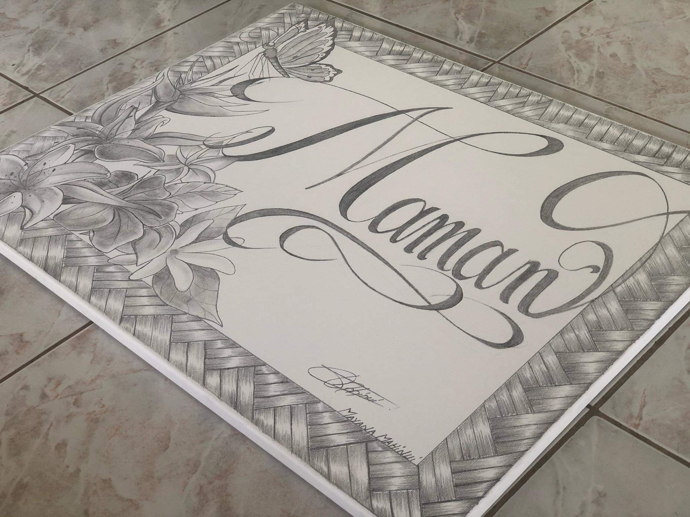

Auto Biographie
Jeune Homme de 23 ans passionné d'art plastique, d'informatique de photographie et de vidéographie
J'ai fait mes études au lycée de Samuel Raapoto à Arue dans la filière STD2A.
Je suis parti pour une durée de 2 ans en Afrique de l'Ouest pour servir une mission en tant que Missionnaire de l'église de Jesus-Christ des Saints des derniers jours.
Photographe amateur passionné de photographie et de vidéographie avec une maitrise avancée de la suite Adobe.
Diplomes et Formation
2015 : BAC STD2A Science Technolique des Arts Appliqués
au Lycée de Samuel Raapoto de Arue. 2017 : BAFA A3. Juillet et Novembre-Décembre 2017 : Animateur de centre de vacances. Compétences Maitrise de logiciel photo/vidéo montage. Adobe Photoshop Adobe Lightroom Adobe PremierPro imovie KineMaster Exemple de projet : Vidéo amateur pour la publicité des glaces SnowKing Tahiti, réalisé via Imovie. Expériences Professionnel 2016 Membre du comité des actions communale de Taiarapu ouest. 2017 Service Civique à la FOL affecté a la Mairie de Toahotu. Qualités et Points Fort Bon contact avec les gens. Sociable et facile au dialogue. Apprend vite et s'adapte vite. Travailleur.
